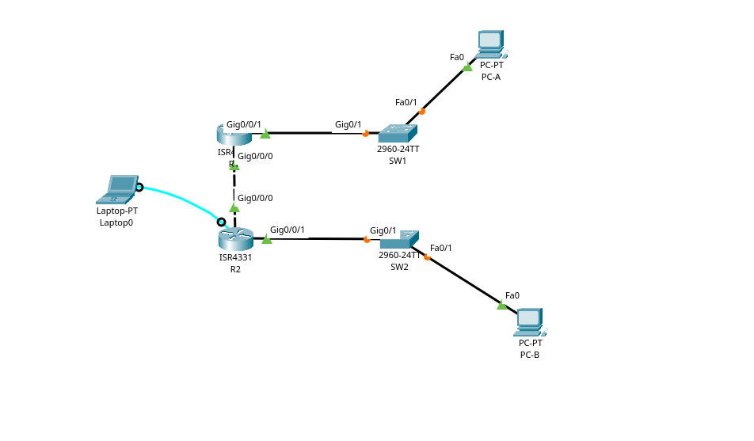

Implementação de SLAAC, DHCPv6 Stateless e DHCPv6 Stateful em topologia IPv6 com roteadores Cisco.
Antes de iniciar a configuração prática, é fundamental entender os três métodos de atribuição dinâmica de endereços IPv6 que serão utilizados neste laboratório.
O que é? O próprio host (PC) gera seu endereço IPv6 automaticamente, sem precisar de servidor DHCP.
Como funciona?
O que é? O host gerencia seu próprio endereço (via SLAAC), mas usa o DHCP APENAS para informações adicionais (DNS, domínio, etc.).
Como funciona?
other-config-flag (flag O)
other-config-flag (O)
O que é? O servidor DHCP controla tudo — atribui o endereço IPv6, DNS, domínio e outras configurações.
Como funciona?
managed-config-flag (flag M)
managed-config-flag (M)
| Característica | SLAAC | DHCPv6 Stateless | DHCPv6 Stateful |
|---|---|---|---|
| Endereço IPv6 | Host gera | Host gera | DHCP atribui |
| DNS Server | Manual/RDNSS | DHCP fornece | DHCP fornece |
| Nome de domínio | Manual | DHCP fornece | DHCP fornece |
| Gateway | RA fornece | RA fornece | RA fornece |
| Controle do admin | 🟡 Baixo | 🟡 Médio | 🟢 Total |
| Carga no DHCP | Nenhuma | Baixa | Alta |
| Servidor DHCP | Não precisa | Precisa (só DNS) | Precisa (tudo) |
| Flag no RA | Nenhuma | other-config-flag (O) |
managed-config-flag (M) |
| Binding DHCP | Não existe | Não existe | Existe |
| Lease (aluguel) | Não | Não | Sim |
| Exemplo | Redes domésticas | Pequenas empresas | Grandes empresas |
Espaço reservado para imagem da topologia: Insira aqui a imagem da topologia do laboratório.

R1 G0/0/0 ↔ R2 G0/0/0 | R1 G0/0/1 ↔ PC-A | R2 G0/0/1 ↔ PC-B
| Dispositivo | Interface | Endereço IPv6 |
|---|---|---|
| R1 | G0/0/0 | 2001:db8:acad:2::1/64 |
| R1 | G0/0/0 (link-local) | fe80::1 |
| R1 | G0/0/1 | 2001:db8:acad:1::1/64 |
| R1 | G0/0/1 (link-local) | fe80::1 |
| R2 | G0/0/0 | 2001:db8:acad:2::2/64 |
| R2 | G0/0/0 (link-local) | fe80::2 |
| R2 | G0/0/1 | 2001:db8:acad:3::1/64 |
| R2 | G0/0/1 (link-local) | fe80::1 |
| PC-A | Placa de rede | DHCP (automático) |
| PC-B | Placa de rede | DHCP (automático) |
| Quantidade | Dispositivo | Modelo | Observação |
|---|---|---|---|
| 2 | Roteadores | Cisco 4221 | IOS XE 16.9.4 |
| 2 | Switches | Cisco 2960 | Opcionais - IOS 15.2(2) |
| 2 | PCs | Windows | Com emulador de terminal |
| Conexão | Cabo | Interface Origem | Interface Destino |
|---|---|---|---|
| R1 ↔ R2 | Ethernet | R1 G0/0/0 | R2 G0/0/0 |
| R1 ↔ PC-A | Ethernet | R1 G0/0/1 | PC-A (via Switch1) |
| R2 ↔ PC-B | Ethernet | R2 G0/0/1 | PC-B (via Switch2) |
| Dispositivo | Porta Console |
|---|---|
| R1 | Console |
| R2 | Console |
ipv6 unicast-routing em ambos os roteadores.
enable configure terminal hostname Switch1 ip domain-lookup enable secret class line console 0 password cisco login line vty 0 4 password cisco login service password-encryption banner motd #Acesso não autorizado proibido# interface range f0/1-24 shutdown interface range g0/1-2 shutdown end write memory
enable configure terminal hostname R1 ip domain-lookup enable secret class line console 0 password cisco login line vty 0 4 password cisco login service password-encryption banner motd #Acesso não autorizado proibido# ipv6 unicast-routing interface g0/0/0 ipv6 address 2001:db8:acad:2::1/64 ipv6 address fe80::1 link-local no shutdown interface g0/0/1 ipv6 address 2001:db8:acad:1::1/64 ipv6 address fe80::1 link-local no shutdown ipv6 route ::/0 2001:db8:acad:2::2 end write memory
enable configure terminal hostname R2 ip domain-lookup enable secret class line console 0 password cisco login line vty 0 4 password cisco login service password-encryption banner motd #Acesso não autorizado proibido# ipv6 unicast-routing interface g0/0/0 ipv6 address 2001:db8:acad:2::2/64 ipv6 address fe80::2 link-local no shutdown interface g0/0/1 ipv6 address 2001:db8:acad:3::1/64 ipv6 address fe80::1 link-local no shutdown ipv6 route ::/0 2001:db8:acad:2::1 end write memory
R1# ping 2001:db8:acad:3::1
Saída esperada: !!!!! Success rate is 100 percent (5/5)
C:\> ipconfig IPv6 Address. . . . . . . . . . . : 2001:db8:acad:1:5c43:ee7c:2959:da68 Link-local IPv6 Address . . . . .: fe80::5c43:ee7c:2959:da68%6 Gateway Padrão . . . . . . . . .: fe80::1%6
Resposta: A parte do host-id (últimos 64 bits) foi gerada automaticamente pelo PC usando o método EUI-64 ou endereço temporário aleatório, baseado no endereço MAC da placa de rede.
other-config-flag na interface G0/0/1.
R1# configure terminal R1(config)# ipv6 dhcp pool R1-STATELESS R1(config-dhcp)# dns-server 2001:db8:acad::254 R1(config-dhcp)# domain-name Stateless.com R1(config-dhcp)# exit
R1(config)# interface g0/0/1 R1(config-if)# ipv6 nd other-config-flag R1(config-if)# ipv6 dhcp server R1-STATELESS R1(config-if)# end R1# write memory
R1# show ipv6 dhcp pool R1# show ipv6 dhcp server
ipconfig /all deve mostrar:
Sufixo de DNS primário. . . . . . . : Stateless.com Específico de Conexão Sufixo DNS. : STATELESS.com Lista de pesquisa de sufixo DNS. . : Stateless.com Servidores DNS . . . . . . . . . . . : 2001:db8:acad::254
2001:db8:acad:3::/64 para atender o
PC-B.
R1# configure terminal R1(config)# ipv6 dhcp pool R2-STATEFUL R1(config-dhcp)# address prefix 2001:db8:acad:3::/64 R1(config-dhcp)# dns-server 2001:db8:acad::254 R1(config-dhcp)# domain-name StateFul.com R1(config-dhcp)# exit
R1(config)# interface g0/0/0 R1(config-if)# ipv6 dhcp server R2-STATEFUL R1(config-if)# end R1# write memory
ipv6 dhcp relay destination pode não estar disponível em algumas versões do IOS
(como a imagem universalk9). Se o comando não for reconhecido, utilize a
SOLUÇÃO ALTERNATIVA abaixo.
R2# configure terminal R2(config)# interface g0/0/1 R2(config-if)# ipv6 nd managed-config-flag R2(config-if)# ipv6 dhcp relay destination 2001:db8:acad:2::1 R2(config-if)# end R2# write memory
Configure o R2 como servidor DHCP diretamente para a rede do PC-B:
R2# configure terminal R2(config)# ipv6 dhcp pool R2-STATEFUL R2(config-dhcp)# address prefix 2001:db8:acad:3::/64 R2(config-dhcp)# dns-server 2001:db8:acad::254 R2(config-dhcp)# domain-name StateFul.com R2(config-dhcp)# exit R2(config)# interface g0/0/1 R2(config-if)# ipv6 nd managed-config-flag R2(config-if)# ipv6 dhcp server R2-STATEFUL R2(config-if)# end R2# write memory
ipconfig /all deve mostrar:
IPv6 Address. . . . . . . . . . . : 2001:db8:acad:3:aaaa:XXXX:XXXX:XXXX Sufixo de DNS primário. . . . . . . : StateFul.com Servidores DNS . . . . . . . . . . . : 2001:db8:acad::254 Lista de pesquisa de sufixo DNS. . . : StateFul.com Gateway Padrão . . . . . . . . .: fe80::1%6
R1# show ipv6 dhcp binding R2# show ipv6 dhcp binding
C:\> ping 2001:db8:acad:1::1 C:\> ping 2001:db8:acad:2::1
hostname R1 ipv6 unicast-routing ! interface g0/0/0 ipv6 address 2001:db8:acad:2::1/64 ipv6 address fe80::1 link-local no shutdown ! interface g0/0/1 ipv6 address 2001:db8:acad:1::1/64 ipv6 address fe80::1 link-local ipv6 nd other-config-flag ipv6 dhcp server R1-STATELESS no shutdown ! ipv6 route ::/0 2001:db8:acad:2::2 ! ipv6 dhcp pool R1-STATELESS dns-server 2001:db8:acad::254 domain-name Stateless.com ! ipv6 dhcp pool R2-STATEFUL address prefix 2001:db8:acad:3::/64 dns-server 2001:db8:acad::254 domain-name StateFul.com ! interface g0/0/0 ipv6 dhcp server R2-STATEFUL ! end write memory
hostname R2 ipv6 unicast-routing ! interface g0/0/0 ipv6 address 2001:db8:acad:2::2/64 ipv6 address fe80::2 link-local no shutdown ! interface g0/0/1 ipv6 address 2001:db8:acad:3::1/64 ipv6 address fe80::1 link-local ipv6 nd managed-config-flag no shutdown ! ipv6 route ::/0 2001:db8:acad:2::1 ! ipv6 dhcp pool R2-STATEFUL address prefix 2001:db8:acad:3::/64 dns-server 2001:db8:acad::254 domain-name StateFul.com ! interface g0/0/1 ipv6 dhcp server R2-STATEFUL ! end write memory
Baixe a topologia oficial resolvida (.pkt) contendo todas as verificações validadas.
Baixar Arquivo .PKT